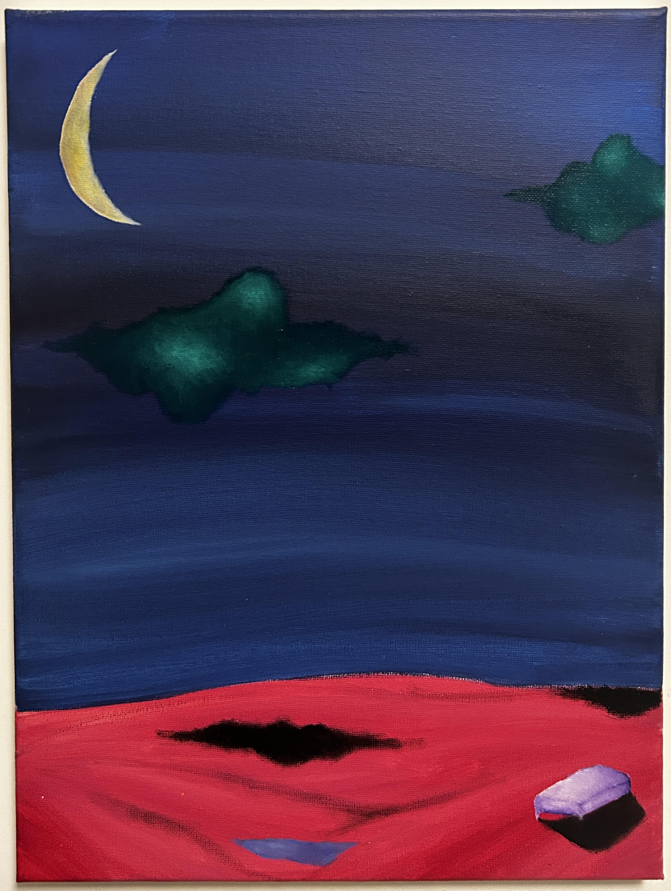

Il quadro è un paesaggio notturno surreale e astratto, caratterizzato da forti contrasti cromatici e da un'atmosfera onirica. • Elementi enigmatici: In basso a destra emerge un piccolo blocco geometrico violaceo sospeso o appoggiato, che proietta un'ombra scura molto marcata, quasi a voler inserire un elemento architettonico o solido in un contesto fluido. Poco distante, una forma triangolare violacea sembra galleggiare o sprofondare nel rosso. • Il significato psicologico e simbolico: L'opera sembra esplorare il tema dell'inconscio, del sogno e dell'alienazione. Il contrasto stridente tra il rosso e il blu evoca una tensione tra la calma apparente della notte e un'energia pulsante o inquieta che si muove sul terreno. La luna e le nuvole verdi introducono un senso di mistero e spiritualità, mentre la solitaria figura geometrica in basso a destra può simboleggiare l'isolamento dell'individuo, la fragilità dei manufatti umani o un punto di ancoraggio razionale all'interno di un panorama interiore vasto e indecifrabile.